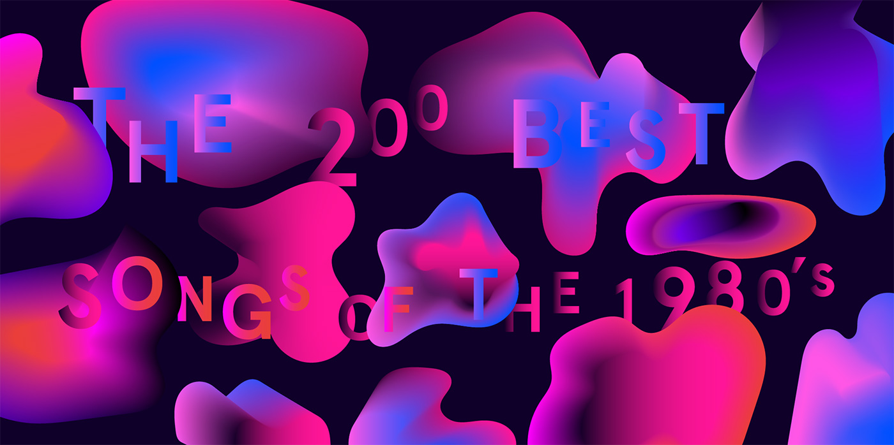

Pitchfork editorial graphic for The 200 best songs of the 1980's, by Pitchfork Staff
Pitchfork editorial graphic for Pop Sovereign: A Conversation with Madonna, by T. Cole Rachel

Pitchfork editorial graphic for The Proverbial Wisdom of Earl Sweatshirt, by Jayson Greene

Pitchfork editorial graphic for Sleater-Kinney: A Certain Rebellion, by Jessica Hopper

Pitchfork editorial graphic for Unearthing the Future of French Pop, by Anthony Mansuy

Pitchfork editorial graphic for Father John Misty: How To Make Love, by David Bevan
Pitchfork editorial graphic for Fix the Future: Holly Herndon's Collective Vision, by Philip Sherburne

Pitchfork editorial graphic for The Pitchfork Guide to New Year's Eve, by Trey Zenker

Pitchfork editorial graphic for Adrenaline Addict: Inside Soko's Manic Pop Dreamworld, by Stuart Berman
Web design for the Pitchfork Cover Story Strange Visitor: A Conversation With Aphex Twin, by Philip Sherburne. Lead development by Mark Beasley. Visit Site →
Graphic design direction for the redesign of Rookie.com. Development by Fixtive Kin & Max Fenton. Visit Site →
Web design for The Pitchfork Review site. Lead development By Neil Wargo. Visit Site →
Web design for the Pitchfork Cover Story Fall Down Laughing: The Story of Majical Cloudz, by Jenn Pelly. Lead development by Drew Gaerig. Visit Site →
Web design for Contours: Follow Courtney Barnett on Tour. Lead development by Mark Beasley. Visit Site →
Web design for The Pitchfork Review feature Rave New World Revisited: An Oral History of NYC's NASA, by Matt Diehl. Lead development by Neil Wargo. Visit Site →